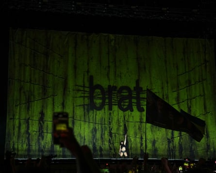
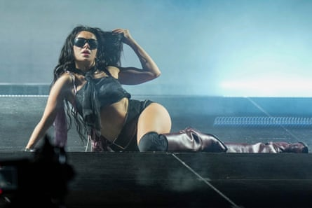

F or my money, one of the best pop tours of the 21st century was Kanye West’s Yeezus tour. Like the album it was supporting, the Yeezus tour was abrasive and minimal and totally spectacular: West stood in front of gigantic bright-red screens and blasted arenas with some of the harshest, most acidic sounds ever considered mainstream. That tour was unrelenting and uncompromising and, as a result, totally compelling.
Charli xcx’s Brat tour may be the only clear successor. It is a show whose main components are a curtain, a few stadium strobe light rigs, and one star whose vision is so specific and so well realised that the “necessities” of an A-list pop show – dancers, set pieces, etc – suddenly seem like crutches for anyone less in tune with themselves. This makes sense, given that Charli is also our clearest successor to West himself: despite being a prodigiously talented mainstream songwriter, she has dedicated her career to exploring the most caustic, hallucinatory sounds of the underground, and working out how best to synthesise them with the pleasures of pure pop music.
Charli xcx performs during the Glastonbury Festival in Worthy Farm, Somerset, England, Saturday, June 28, 2025. (Scott A Garfitt/Invision/AP)Photograph: Scott A Garfitt/Invision/AP
With the release of last year’s Brat, an album that became a cultural moment without ever diluting Charli’s ingenuity, mainstream culture finally caught up to Charli. So it’s fitting that she’s here at Worthy Farm headlining, by some metrics, the biggest music festival in the world. Of course, she’s not really headlining – Charli’s Saturday night set closing the Other stage is, on a purely technical level, second billed to Neil Young, who is headlining the Pyramid at the same time. But ask anyone here, and the headliner of the entire weekend is Charli.
Her audience at the Other stage is dizzyingly huge, surely at least 60,000 people – a surreal sight for the many gay men who saw her perform in 200-capacity clubs as recently as 2019. And from the very first moments of her set, when she intones, gravely, “Glastonbury, don’t fucking play with me”, it’s clear that she is at the height of her powers, totally capable of holding the attention of a stadium’s worth of people. After all – who else could warrant a general expanding of the Other stage and the addition of more screens and speakers? Even if Charli wasn’t first billed, everyone at Glastonbury knew she was headlining.
‘Don’t fucking play with me’ … Charli xcxPhotograph: Scott A Garfitt/Invision/AP
This was made clear with an intense, totally uncompromising set in which Charli performed totally alone, not even with collaborators such as Lorde, who was also at Glastonbury. The Brat tour is at its most effective when the viewer has to submit to Charli’s world, and this show, loud and bawdy and sometimes very unnerving in its intensity, was practically Charli-led hostile takeover.
Her skill is in welding sophistication on to brute force – consider a song like Club Classics, which deftly stitches together at least four different styles of dance music in barely four minutes, but also brandishes a chorus of simply “me, me, me, me” – and even when she breaks script, you see that skill in action. “I’m known to have a heart of stone,” she tells the crowd, “But this is very fucking emotional.” She should save her tears – with an audition so memorable, so fun, so spectacular, the Pyramid has to be next.